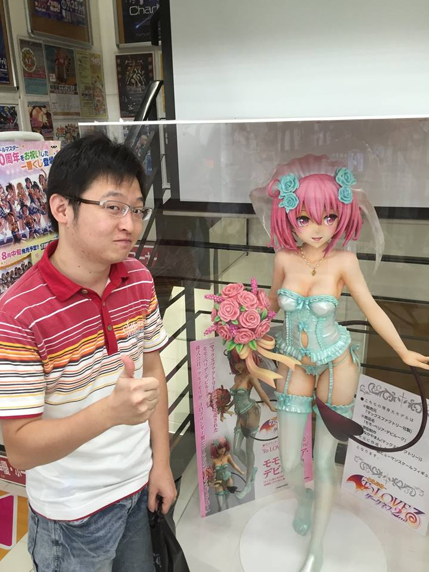

name: Hiromasa Ihara
mail: iharahiromasa@gmail.com
history:
1992/8/28 Born in Ichihara, Chiba
2008/4-2015/3 National Institute of Technology, Kisarazu College(Bachelor's degree)
2015/4-2018/3 The University of Tokyo(Master's degree)
2018/4-2019/7 Internet Initiative Inc.
2019/8- Girasol Energy Inc.
web services:
taisyo.jp(this page!)
kokalog.net
yonalog.net
あつまれどうぶつの森 マイデザインQRコード生成 LINE Bot - マイデザインBot
国立国会図書館デジタルコレクション どうぶつの森マイデザイン 変換 - dcndl2butumori